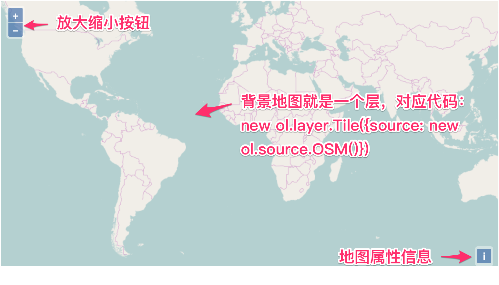

初步解析地图组成
创建地图的代码如此简单，以致于让一部分初学者误认为在此基础上的深入开发也很简单，这是一个非常错误的理解。此时，最关键的第一步是先弄明白每一句代码的含义，理解他们是如何组织起来的。否则，在后续的学习和使用过程中，犹如瞎子摸象，会找不到问题的关键点而迷失方向。让我们再次回顾一下之前那个简单地图的代码：
// 创建地图
new ol.Map({
// 设置地图图层
layers: [
// 创建一个使用Open Street Map地图源的瓦片图层
new ol.layer.Tile({source: new ol.source.OSM()})
],
// 设置显示地图的视图
view: new ol.View({
center: [0, 0], // 定义地图显示中心于经度0度，纬度0度处
zoom: 2 // 并且定义地图显示层级为2
}),
// 让id为map的div作为地图的容器
target: 'map'
});
注意，其实上面这段代码就只有一条语句:
new ol.Map({...});
其他代码只是用于设置地图的构造参数。由此可以推测出ol.Map是最主要的地图类，创建地图就需要构造这么一个对象。接下来依次分析每一个参数部分的代码。
参数
layers:layers: [ // 创建一个使用Open Street Map地图源的瓦片图层 new ol.layer.Tile({source: new ol.source.OSM()}) ],从名字和具体的值可见这个地方可以设置多个
layer，它是OpenLayers 3地图的组成结构单元，地图是由多个layer组成的，这种设计类似于Photoshop里面的图层，多个图层是可以叠加的，在最上面的会覆盖下面的，以此类推。这种设计方式在很多图形系统中存在。此处添加了一个Open Street Map的地图layer。参数
view：view: new ol.View({ center: [0, 0], // 定义地图显示中心于经度0度，纬度0度处 zoom: 2 // 并且定义地图显示层级为2 }),通过字面意思可以看出，它为地图定义显示窗口，对应
ol.View类，可以自定义地图显示的中心点，缩放层级等。参数
target：target: 'map'指定地图在页面中具体哪个位置进行显示，为此要记住地图显示还是离不开使用dom来实现。虽然和地图业务没什么关系，但也必不可少。
通过上面的源码解读，我们可以发现OpenLayers 3地图主要是由layer和view组成，layer可以有多个，view只能有一个。

上图能明确看到的是layer，看不出view在哪儿，只知道地图显示中心确实在经度0，纬度0处。除此之外，还能看到左上角的放大缩小按钮，以及右下角的属性信息按钮。如果在地图上双击鼠标左键，或者按住鼠标左键拖动，可以看到地图也是会放大或者移动的。这些都是分析代码并没有看到的。很明显OpenLayers 3有很多默认行为，一个地图的完整构成，远不是只有view和layer就行了。